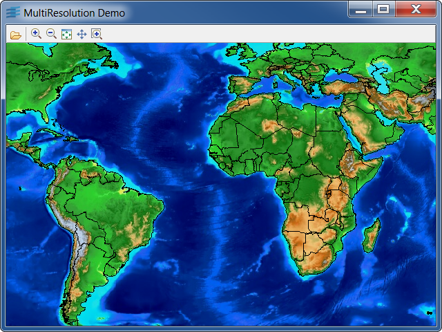

Sample: multires
Multiresolution Shapefile and Image File
Multiresolution viewer with Load-On-Demand implementation.

This sample shows how to read multiresolution files
with Rogue Wave Views. This sample can load
multiresolution data found on the Data CD.
Using the sample
After having launched the sample, you can choose a
multiresolution directory to load with the Open icon.
This directory can be either a multiresolution
shapefile directory,
a multiresolution raster directory, or a Data CD root.
You can also specify
the directory to load as argument on the command line.
Il you choose a Data CD root, both the raster and the
shapefiles will be loaded.
Once the data is loaded, you can navigate through it
by using the zoom, unzoom and pan interactors found
in the toolbar.
About the Data Format
The data formats used in this sample are: a
multiresolution JPEG image set
and a multiresolution Shapefile files set.
Classes involved:
IlvShapeFileTileLoaderIlvShapeFileLayerIlvScaleVisibilityFilterIlvImageTileLoaderIlvImageLayer
Source files: